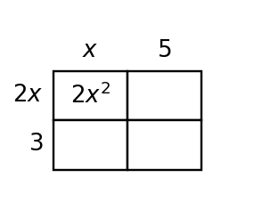

Start with what you can solve independently. Then find different classmates to compare reasoning or help with problems you have not completed. Record your own work and have each partner initial one problem they discussed with you.
Which phrase usually suggests a rate in a linear model: “each,” “total,” or “both”?
A streaming service charges \$8 per month plus a \$20 setup fee. Another charges \$12 per month with no setup fee. Write and solve a system to find the break-even month.
A student models a coin problem with $n+q=44$ and $5n+25q=6.80$. The student says the system is ready to solve because the money equation uses cents and dollars together.
Assess the reasonableness of the model, revise it if needed, and explain how the units affect the solution.
A club is choosing between two bus companies. Company A charges \$180 plus \$6 per student. Company B charges \$90 plus \$9 per student. A draft graph labels the intersection as $(30,270)$ but the written conclusion says “Company A is always cheaper.”
- Revise the written conclusion so it matches the model.
- Explain what each coordinate of the intersection means.
- State which company is cheaper for 20 students and for 40 students.
For $r(x)=|x-5|$, find $r(5)$.
What does a repeated input with two different outputs show about a relation?
If $f(0)=12$, name the input and output in that statement.
Simplify by combining like terms: $2x+3x+3+4x^2+10+x$.
Rewrite $4(2x+3)+5x$ in an equivalent simplified form. Show the distribution and combining steps.
The rectangle model represents a product. Fill in the missing cells and write the product as a sum.

Construct a strategy for translating a context into an equation before solving. Apply your strategy to: a phone plan charges \$12 plus \$5 per gigabyte and the total bill is \$47.
A table for an input-output rule is flawed: $(0,3),(1,6),(2,9),(2,12),(3,12)$. Revise the relation in two different ways: one revision that makes it a function with a constant increase, and one revision that makes it a function but not a constant-increase rule. Explain both choices.
For the graph of a distance model, explain what an intercept at $20$ meters would mean.
| $x$ | 0 | 2 | 4 | 6 |
|---|---|---|---|---|
| $y$ | 1 | 5 | 9 | 13 |
Use the table to graph the line on the blank coordinate plane and describe the intercept.

You are given a graph with no labeled intercept but two clear points: $(-2,9)$ and $(4,-3)$. Construct a strategy to write the equation accurately and explain why your strategy avoids guessing from the picture.
Design a real-world graphing situation with a positive slope and a positive starting value. Give the equation, axis labels, and four ordered pairs that would make a clear graph.